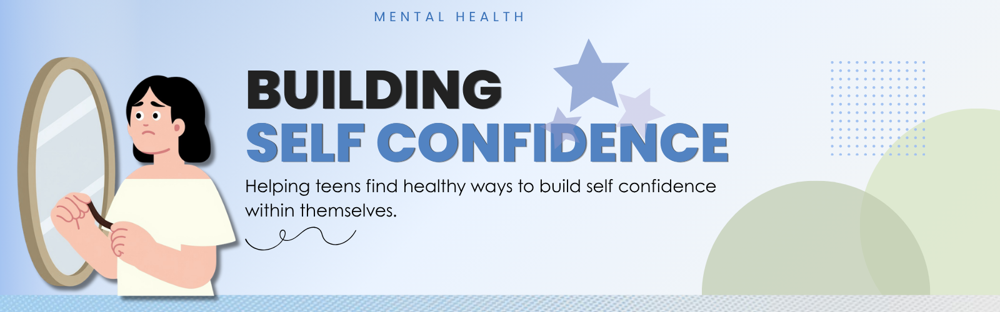

Mental Health

Confidence is believing and having trust in your abilities and judgement. Confidence isn’t thinking you’re better than everyone else and that you know everything. It’s being able to try for yourself, and even when things go wrong you can get back up, be okay and try again.
Having low confidence is when you don’t believe in yourself and your abilities. It’s always second-guessing yourself, waiting for others to take the initiative, overthinking every interaction or decision, not raising your hand because you’re scared to make a mistake and such. Low confidence makes people always focus on their errors instead of their strengths and abilities.
Ways to build your confidence:
Having self-confidence matters because it helps improve your relationships, lets you try new things, helps you reject peer pressure and it sets you up for the future. Self-confidence helps you to stop wasting your time worrying about how others see you and focus on what you want for yourself and who you want to be. It gives you the power to keep going when things get hard.
We're currently working on this section Check back shortly!
A Free and private program ran by licensed therapist for teens aged 13-17 .
Visit WebsiteSchool counselors, social workers, teachers and staff you trust can provide support.